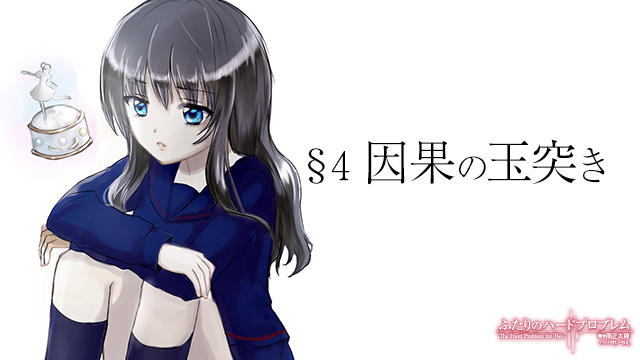

冬。吐いた息が白く立ち上がる朝とおごそかに静まり返った夜の空気が印象的な季節。冷たくなった手先をこすり合わせながらストーブを焚き、木枯らしが吹き始める頃にはお気に入りのコートを衣装ケースからひっぱり出す季節。大晦日が近づけば道端を足早に通り過ぎる人の家庭へ思いを馳せ、年が明けると羽子板を突く子供の姿を微笑ましく眺める季節。希海は、そんな冬が一年のうちでもっとも好きだった。
ただし、ある一日を除いて。
その日の真揺ニュータウンは、近畿市は、いや、日本中がお祭りムード一色だった。開けた場所にはきらびやかに装飾されたモミの木が立ち並び、建物は煌々としたイルミネーションで彩られる。街角のショーウィンドウに目をやれば、書き入れ時とばかりに華やかに陳列される商品。そして通りには照れくさそうに手をつなぐ男女や大きなプレゼントを抱えた家族連れ。
そう、今日は十二月二十四日。クリスマス・イブである。
そんな街を真冬の冷たい風が幾度となく駆け抜け、そのたびに人々は身震いをした。連日寒い日々が続いているが今日は特に冷える。だが、この北風をもってしてもこの場を包み込んでいる幸福な喧騒を吹き飛ばすことはできそうになかった。それどころか、この空気の冷たさに皆何かを期待しているようにも見える。
それもそのはずだ。天気予報が伝えるところよると今晩から明日にかけて近畿市各地では雪が降るらしい。ホワイトクリスマスである。しかもこの辺りはただでさえ降雪量が少なく、年に一日二日程度しか雪が降らない。そして、その日が来れば交通機関は大幅に乱れ、通学路には雪だるまが立ち並び、普段は滅多にお目にかかれない白粉をまとった街の姿に皆が色めき立つのだ。そんな一大イベントがクリスマスに重なるとあって人々もどこかソワソワした、浮ついて落ち着かない様子だった。
しかし、そんな華々しい街に似つかわしくない人物がここに一人いる。その人物はまるで自らが晒し者になっているかのような羞恥の表情で周囲を威嚇していた。職業は大学生。ただし大学生と言ってもここ一年と八ヶ月ほどは大学へ顔を見せておらず、ただ日々を怠惰に過ごすだけの名ばかり学生なのだが。
「…………」
お前ら、絶対にこっち見るなよ。
希海はすれ違う人に眼を飛ばしながら歩いていた。確かに今の希海は少しだけ人目を引く状況にはあるのだが、それにしたってこれはやり過ぎである。幸せそうなカップルや家族連れ、はては子供に至るまで目で殺してまわる様はもはや通り魔に近い。
通常クリスマス・イブにこのような奇行に走るのは決まって独り身の者である。それが若者であればカップルを、中年以上であれば家族連れを羨望と怨嗟の入り混じる濁った目で見てしまうものだ。
だが今の希海はそれと少し事情が違う。確かにここ数年間、異性に縁がない状態が続いているし、大学を休みがちになってからは女友達でさえ疎遠になった。一介の独り身としてこのクリスマス・イブという日に思うところだって無くはない、というか大いにある。しかし今はそれ以前の問題として――
「ほらほら！ 見てください希海さん、おっきなツリーですねえ！」
隣を歩くリコが子供のように声を張り上げた。頼む、目立つからやめてくれ。
「あ……ああ。うん、そうね」
対する希海の返答はどこかわざとらしいく、作り笑顔を見せる口元がこれでもかというほどに引き攣っている。
「そういえば今日は雪が振るんですって！ 知ってました？」
「う、うん。天気予報で見た」
「あっ、あそこ！ サンタクロースが何か配ってますよ！ 行ってみましょう！」
リコは通りの向こう側にサンタ（の格好をしたバイトの兄ちゃん）を見つけると、そのまま小走りに駆け出した。少女が希海から離れるにしたがって、その細い首筋を覆っていた赤いマフラーは次第に張力を増していき、ふたりの間にだらしなく垂れ下がっていた毛糸の束がするすると危なっかしく上昇していく。
「って、リコちょっと待――――ぐべっ！！」
首が締まった。
口蓋垂が押しつぶされ、変なものが食道のあたりからこみ上げてくる。希海はしばしの間、喉に手を当てて咳き込むとやがてリコに向き直り、
「どあほっ！ 何しとん――」
怒鳴った。そして再びむせた。
「す、すいません……。つい」
リコが慌てて駆け寄り、背中を擦ってくれる。背後から道行く人のクスクスとした笑い声が聞こえてきた気がしたが、本当に笑われたのか単なる疑心暗鬼なのかは分からない。
「ったくもう、危ないから急に走りださないでよ。これ着けてるときは特に。いい？」
希海は息を整え、自分たちの首に巻き付いた一本のマフラーを指さして告げた。そう。これこそが先程から希海の気を煩わせていた元凶、赤い色の恋人マフラーである。ただでさえ自分たちの愛をこれでもかというほどアピールするノロケアイテムだというのに、それを女二人が身に着けているのだ。しかもカップルの片方は見た目中学生の少女。同性愛嗜好のさもしい女子大生がいたいけな未成年に手を出した……そう思われても仕方のない絵面だった。
そしてまた一人、社会人らしき青年が『変わったものを見た』という目で希海たちの方を一瞥して足早に歩き去っていく。
（……何見てんのよ。ぶっ飛ばすわよ）
心のなかで啖呵を切ってみるが、当然、街を行く人に他者の脳裏を見透かす力など存在せず、いくら威勢のいいセリフを並べてみても暖簾に腕押しである。そんなわけで希海はこうして相手を選ばずに、眼力を行使するはめになっているのだ。『おいてめー、何見てんだ』と。
ところで、なぜふたりはこんなものを身に着けているのだろうか。その答えを知るには、小一時間ほど時を遡る必要がある。それは夕方のことだ。夕方――すなわち本日十二月二十四日クリスマス・イブの午後五時前である。